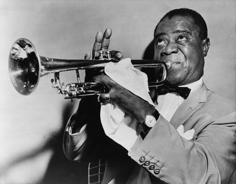

| inicio | | | | | @ | ||
Soplidos y mareos
Todos saben que nos mareamos un poco cuando soplamos para avivar el fuego. Pero no sé si notaron que el mareo ocurre no cuando nos ponemos a soplar, sino cuando dejamos de hacerlo.
Les presento una hipótesis extraviada y disoluta, carente del más insignificante vestigio de respaldo académico; que no es el fruto del paciente y modesto estudio ni de la esforzada y tenaz investigación, sino apenas un acto reflejo, una pulsión enfermiza e irrefrenable, una eyaculación precoz de una mente disipada y libertina.
Cuando soplamos las brasas solemos aspirar por la nariz, o por la boca bastante abierta. En ambos casos la resistencia de ingreso del aire es pequeña, y entonces la presión en el interior de los pulmones es apenas un poco menor que la atmosférica. Pero cuando expulsamos el aire, en cambio, y como queremos que salga dirigido velozmente, lo hacemos a través de una abertura pequeña de la boca. La resistencia de salida es grande, y la presión del aire en los pulmones es ahora considerablemente mayor que la atmosférica. Entonces, por momentos la presión en los pulmones es menor que la atmosférica, y por momentos mayor, pero en promedio en el tiempo la presión es más alta que la normal; por eso aumenta el oxígeno en la sangre. Hay técnicas para conseguir esa hiperventilación, que usan atletas y parturientas. Algunos instructores de gimnasia piden a sus alumnos que silben cuando exhalan, justamente para que aumente la presión parcial de oxígeno y la sangre disponga de gran cantidad de ese elemento para los ejercicios que vienen enseguida y demandan mucha energía.
Hasta aquí los hechos; sigue la divagación. Puesto que al soplar durante mucho tiempo el organismo dispone de más oxígeno del que necesita, seguramente el cerebro debe disparar alguna hormona en algún sitio, que hace que disminuya la eficiencia del intercambio. Pero entonces, en cuanto cesan los soplidos, nuestro cuerpo queda momentáneamente con una deficiencia del gas, que es la que causa el conocido mareo, y hasta el desvanecimiento a veces.
Recuerdo un juego de niños en el que se pedía a un voluntario que resoplara durante uno o dos minutos, que inmediatamente inhalara muy profundamente y que contuviese el aire a pesar de que otro le comprimía el tórax con un fuerte abrazo. A poco de soltarlo el sujeto se desmayaba, y en eso consistía la diversión. Jugué a eso (por favor, no lo hagan), pero por miedo no cumplí del todo las indicaciones, y sólo estuve al borde del desvanecimiento.
Algunos pilotos japoneses de la Segunda Guerra Mundial se sometían a prácticas semejantes, a veces con estrangulación de la carótida, para ejercitarse en la destreza de volver de un desmayo con plena vitalidad y conciencia, que aprovechaban para hacer en los combates maniobras de enorme aceleración.
Sabido eso, surge que para evitar molestias podemos dejar de soplar progresivamente.
Técnica incorrecta: ¡Puf! ¡Puf! ¡Puf! ¡Puf! ¡Puf! ¡Puf! Fin; mareo.
Técnica correcta: ¡Puf! ¡Puf! ¡Puf! ¡Puf! ¡Puf! ¡Puf! ... ¡Puf! ... ... ¡Puf! ... ... ... ¡Puf! Fin; normalidad.
Ése es todo el truco.

Louis Armstrong (1901–1971), gran soplador.
| Publicado originalmente en http://www.elistas.net/lista/divagaciones/archivo/indice/41/msg/43/. Se permite su reproducción citando la fuente. Última actualización nov-2017. Buenos Aires, Argentina. |